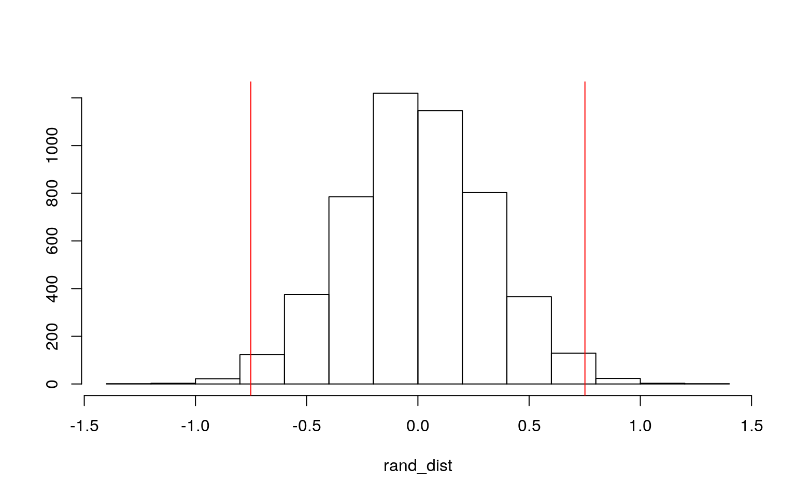
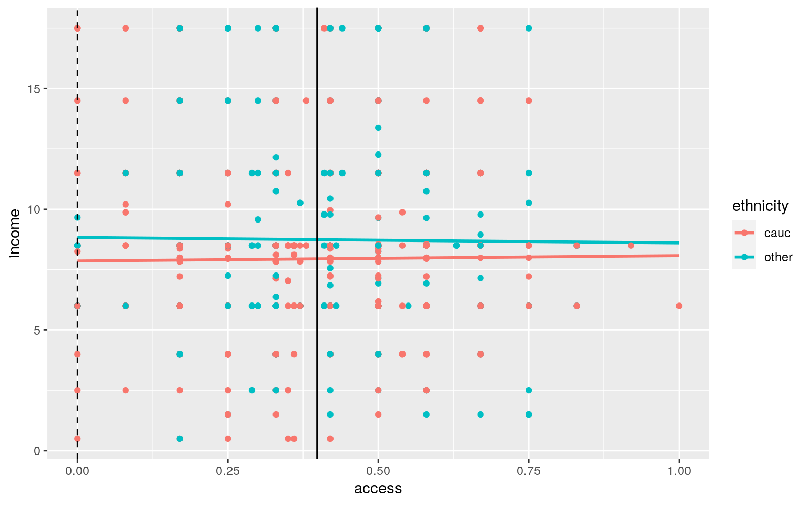
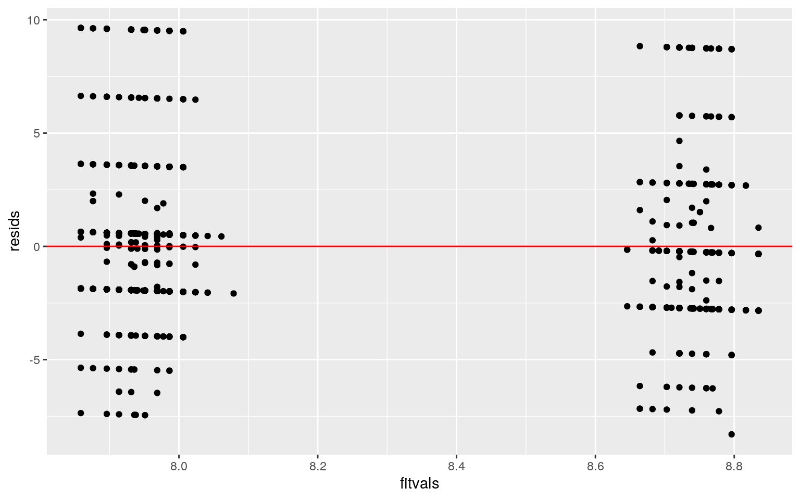
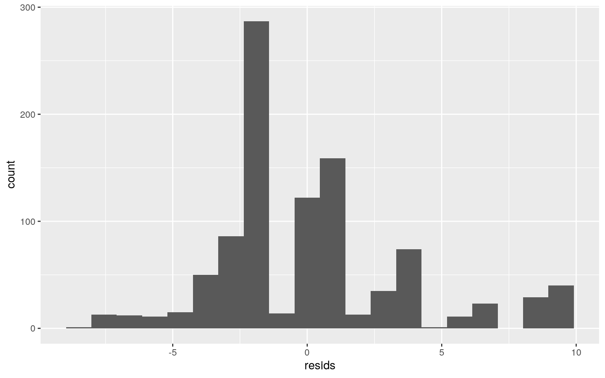
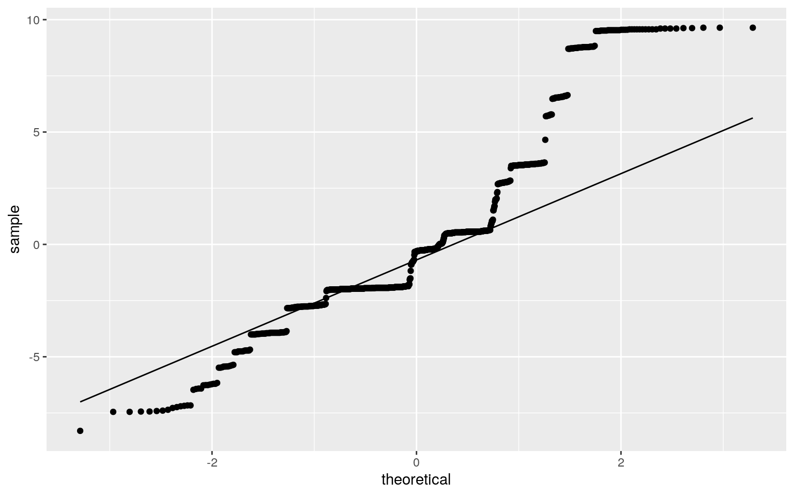
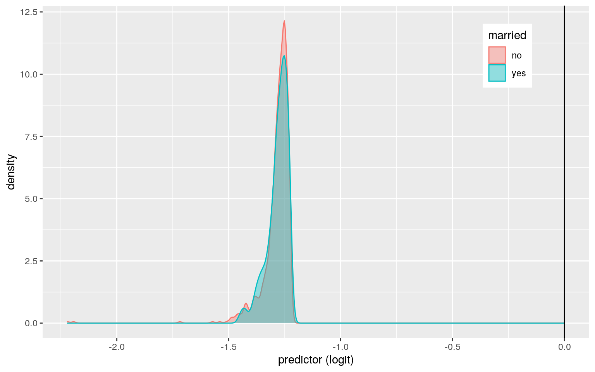
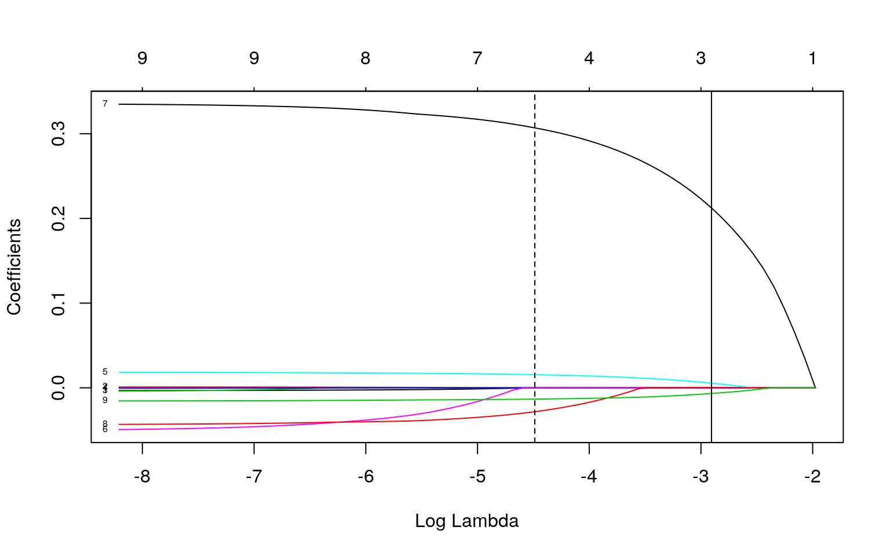

January 1, 0001
Project 2
Desiree Kibbee EID: dlk897
Introducing Data
library(AER)
data("Medicaid1986")
data <- Medicaid1986 %>% select(1:5, 8:12)
head(data)## visits exposure children age income access married
gender ethnicity school
## 1 0 100 1 24 14.500 0.50 no female cauc 13
## 2 1 90 3 19 6.000 0.17 no female cauc 11
## 3 0 106 4 17 8.377 0.42 no female cauc 12
## 4 0 114 2 29 6.000 0.33 no female cauc 12
## 5 11 115 1 26 8.500 0.67 no female cauc 16
## 6 3 102 1 22 6.000 0.25 no female other 12dim(data)## [1] 996 10For this project I chose the built in R dataset “Medicaid1986.” It details consumer use of Medicaid in 1986 including the number of visits that individual made to the doctor (visits variable), the number of days needed for ambulatory/outpatient care (exposure variable), number of children in their household (children variable), their age (age variable), their annual household income (income variable), whether they had low (0) or high (1) access to health services (access variable), whether or not they were married (married variable), their gender, ethnicity, number of years they completed of school including college (school variable), and four other variables were originally in the dataset but I dropped them. There are 996 observations in the dataset.
MANOVA, ANOVA, t test
man1<-manova(cbind(access, income, school, visits, exposure)~ethnicity, data=data)
summary(man1)## Df Pillai approx F num Df den Df Pr(>F)
## ethnicity 1 0.075453 16.159 5 990 2.44e-15 ***
## Residuals 994
## ---
## Signif. codes: 0 '***' 0.001 '**' 0.01 '*' 0.05 '.' 0.1
' ' 1summary.aov(man1)## Response access :
## Df Sum Sq Mean Sq F value Pr(>F)
## ethnicity 1 0.010 0.009953 0.2924 0.5888
## Residuals 994 33.838 0.034042
##
## Response income :
## Df Sum Sq Mean Sq F value Pr(>F)
## ethnicity 1 134.9 134.940 10.334 0.001348 **
## Residuals 994 12980.0 13.058
## ---
## Signif. codes: 0 '***' 0.001 '**' 0.01 '*' 0.05 '.' 0.1
' ' 1
##
## Response school :
## Df Sum Sq Mean Sq F value Pr(>F)
## ethnicity 1 1302 1301.97 73.699 < 2.2e-16 ***
## Residuals 994 17560 17.67
## ---
## Signif. codes: 0 '***' 0.001 '**' 0.01 '*' 0.05 '.' 0.1
' ' 1
##
## Response visits :
## Df Sum Sq Mean Sq F value Pr(>F)
## ethnicity 1 12.2 12.230 1.0869 0.2974
## Residuals 994 11184.0 11.252
##
## Response exposure :
## Df Sum Sq Mean Sq F value Pr(>F)
## ethnicity 1 0 0.062 7e-04 0.9783
## Residuals 994 83212 83.715pairwise.t.test(data$income,data$ethnicity, p.adj="none")##
## Pairwise comparisons using t tests with pooled SD
##
## data: data$income and data$ethnicity
##
## cauc
## other 0.0013
##
## P value adjustment method: nonepairwise.t.test(data$school,data$ethnicity, p.adj="none")##
## Pairwise comparisons using t tests with pooled SD
##
## data: data$school and data$ethnicity
##
## cauc
## other <2e-16
##
## P value adjustment method: none#total t test
1+5+2## [1] 8#probability at least one type 1 error
1-(0.95^8)## [1] 0.3365796#bonferroni
0.05/8## [1] 0.00625First I ran a MANOVA analysis to test the null hypothesis that for all DVs (access, income, school, visits, exposure), means for “caucasian” and “other” ethnicity are equal. Some assumptions for the MANOVA test include random samples and independent observations which this dataset likely does meet, multivariate normality of DVs which some probably do meet. The other assumptions including: homogeneity of within-group covariance matrices, linear relationship among DVs, extreme outliers, and no multicollinearity, were likely not met. 1 MANOVA, 5 ANOVA, and 2 t-tests were run making 8 total tests. Probability of at least one type I error is 0.34. The bonferroni correction is 0.00625 to keep overall type I error rate at 0.05 does not change the results of our tests in this case. Overall, I found that there is a significant difference in the average income as well as a significant difference in the average years of school completed between “caucasian” and “other” ethnicity.
Randomization Test
data%>%group_by(gender)%>%
summarize(means=mean(income))%>%summarize(`mean_diff`=diff(means))## # A tibble: 1 x 1
## mean_diff
## <dbl>
## 1 -0.751rand_dist<-vector()
for(i in 1:5000){
new<-data.frame(income=sample(data$income),gender=data$gender)
rand_dist[i]<-mean(new[new$gender=="male",]$income)-
mean(new[new$gender=="female",]$income)}
{hist(rand_dist,main="",ylab=""); abline(v = c(-0.751, 0.751),col="red")}
#p-value
mean(rand_dist>0.751 | rand_dist < -0.751)## [1] 0.0178For my randomization test the null hypothesis Ho = mean income is the same for females vs. males. My alternative hypothesis Ha = mean income is different for females vs. males. Based on the results we reject the null hypothesis, the mean income is not the same for females vs. males. The probability of observing a mean difference as extreme as the one I got is 0.019 which is less than 0.05.
Linear Regression Model
library(tidyverse)
data$access_c <- data$access - mean(data$access)
fit<-lm(income~ethnicity*access_c, data=data)
summary(fit)##
## Call:
## lm(formula = income ~ ethnicity * access_c, data = data)
##
## Residuals:
## Min 1Q Median 3Q Max
## -8.2962 -1.9864 -0.3156 0.6039 9.6414
##
## Coefficients:
## Estimate Std. Error t value Pr(>|t|)
## (Intercept) 8.7442 0.2072 42.206 < 2e-16 ***
## ethnicitycaucasian -0.7979 0.2487 -3.208 0.00138 **
## access_c -0.2279 1.1169 -0.204 0.83836
## ethnicitycaucasian:access_c 0.4481 1.3445 0.333 0.73900
## ---
## Signif. codes: 0 '***' 0.001 '**' 0.01 '*' 0.05 '.' 0.1
' ' 1
##
## Residual standard error: 3.617 on 992 degrees of freedom
## Multiple R-squared: 0.01042, Adjusted R-squared:
0.007424
## F-statistic: 3.481 on 3 and 992 DF, p-value: 0.0155data %>% select(access, income, ethnicity) ## access income ethnicity
## 1 0.50 14.500 cauc
## 2 0.17 6.000 cauc
## 3 0.42 8.377 cauc
## 4 0.33 6.000 cauc
## 5 0.67 8.500 cauc
## 6 0.25 6.000 other
## 7 0.50 4.000 cauc
## 8 0.67 6.000 cauc
## 9 0.25 6.000 cauc
## 10 0.67 6.000 cauc
## 11 0.50 6.000 other
## 12 0.17 6.000 cauc
## 13 0.67 4.000 cauc
## 14 0.58 6.000 other
## 15 0.67 4.000 cauc
## 16 0.58 2.500 other
## 17 0.58 6.000 cauc
## 18 0.58 8.500 other
## 19 0.42 6.000 other
## 20 0.42 6.000 cauc
## 21 0.42 8.500 other
## 22 0.17 8.500 cauc
## 23 0.17 6.000 cauc
## 24 0.58 6.000 cauc
## 25 0.50 14.500 other
## 26 0.25 11.500 other
## 27 0.67 8.500 cauc
## 28 0.17 14.500 other
## 29 0.50 8.500 other
## 30 0.50 8.500 other
## 31 0.33 11.500 other
## 32 0.50 6.000 cauc
## 33 0.50 8.500 other
## 34 0.67 6.000 cauc
## 35 0.50 6.000 other
## 36 0.58 6.000 cauc
## 37 0.67 7.152 other
## 38 0.67 8.500 other
## 39 0.50 6.000 cauc
## 40 0.50 11.500 cauc
## 41 0.75 6.000 cauc
## 42 0.50 6.000 cauc
## 43 0.50 8.500 cauc
## 44 0.75 6.000 cauc
## 45 0.00 6.000 other
## 46 0.42 6.000 cauc
## 47 0.25 6.000 cauc
## 48 0.17 6.000 cauc
## 49 0.58 6.000 cauc
## 50 0.58 8.500 cauc
## 51 0.75 6.000 other
## 52 0.50 2.500 other
## 53 0.75 8.500 cauc
## 54 0.42 6.000 cauc
## 55 0.33 11.500 other
## 56 0.50 8.500 other
## 57 0.50 11.500 cauc
## 58 0.33 8.500 other
## 59 0.42 8.500 cauc
## 60 0.50 4.000 cauc
## 61 0.58 11.500 cauc
## 62 0.00 8.500 other
## 63 0.50 8.500 other
## 64 0.50 8.500 other
## 65 0.33 6.000 cauc
## 66 0.58 6.000 cauc
## 67 0.33 6.000 other
## 68 0.00 6.000 other
## 69 0.25 6.000 cauc
## 70 0.17 8.500 other
## 71 0.17 6.000 cauc
## 72 0.42 6.850 other
## 73 0.33 8.500 other
## 74 0.58 8.500 cauc
## 75 0.50 8.500 cauc
## 76 0.42 8.500 other
## 77 0.42 8.500 other
## 78 0.42 6.000 other
## 79 0.50 8.500 cauc
## 80 0.58 8.500 other
## 81 0.17 8.500 other
## 82 0.58 8.554 cauc
## 83 0.83 8.500 other
## 84 0.50 6.000 cauc
## 85 0.33 2.500 other
## 86 0.58 6.931 other
## 87 0.50 6.000 cauc
## 88 0.50 6.931 other
## 89 0.50 4.000 cauc
## 90 0.17 17.500 other
## 91 0.33 8.500 other
## 92 0.67 8.500 other
## 93 0.50 8.500 other
## 94 0.42 8.500 other
## 95 0.33 6.000 other
## 96 0.58 8.500 other
## 97 0.33 8.500 other
## 98 0.42 11.500 cauc
## 99 0.50 8.500 other
## 100 0.33 8.500 other
## 101 0.50 8.500 other
## 102 0.50 6.000 cauc
## 103 0.50 8.500 cauc
## 104 0.17 2.500 cauc
## 105 0.42 6.000 cauc
## 106 0.50 8.500 cauc
## 107 0.67 6.000 cauc
## 108 0.50 17.500 cauc
## 109 0.67 1.500 other
## 110 0.50 17.500 cauc
## 111 0.67 8.500 cauc
## 112 0.50 8.554 cauc
## 113 0.42 8.500 cauc
## 114 0.58 8.554 cauc
## 115 0.58 6.000 cauc
## 116 0.75 6.000 cauc
## 117 0.42 11.500 cauc
## 118 0.50 17.500 cauc
## 119 0.67 14.500 cauc
## 120 0.50 14.500 other
## 121 0.33 2.500 cauc
## 122 0.00 8.500 cauc
## 123 0.58 17.500 cauc
## 124 0.50 7.150 other
## 125 0.50 8.375 cauc
## 126 0.75 17.500 other
## 127 0.50 8.377 cauc
## 128 0.75 14.500 cauc
## 129 0.58 17.500 cauc
## 130 0.50 6.000 cauc
## 131 0.58 6.000 cauc
## 132 0.50 13.375 other
## 133 0.17 8.377 cauc
## 134 0.67 8.500 cauc
## 135 0.50 8.500 other
## 136 0.42 6.000 other
## 137 0.42 11.500 cauc
## 138 0.25 6.000 other
## 139 0.58 8.500 other
## 140 0.17 17.500 other
## 141 0.25 11.500 cauc
## 142 0.67 8.500 cauc
## 143 0.17 8.500 cauc
## 144 0.58 11.500 other
## 145 0.33 8.500 cauc
## 146 0.17 8.500 cauc
## 147 0.67 14.500 cauc
## 148 0.50 11.500 other
## 149 0.17 8.500 cauc
## 150 0.08 17.500 cauc
## 151 0.50 6.000 cauc
## 152 0.50 8.500 cauc
## 153 0.75 6.000 cauc
## 154 0.33 14.500 other
## 155 0.08 6.000 other
## 156 0.42 4.000 cauc
## 157 0.50 6.000 cauc
## 158 0.17 6.000 cauc
## 159 0.50 17.500 other
## 160 0.50 8.500 cauc
## 161 0.50 14.500 cauc
## 162 0.67 8.500 cauc
## 163 0.00 17.500 cauc
## 164 0.33 8.500 other
## 165 0.00 8.500 other
## 166 0.58 6.000 other
## 167 0.17 4.000 other
## 168 0.75 11.500 other
## 169 0.00 8.500 other
## 170 0.42 11.500 other
## 171 0.17 11.500 other
## 172 0.58 11.500 cauc
## 173 0.08 11.500 other
## 174 0.58 2.500 other
## 175 0.17 11.500 cauc
## 176 0.33 8.500 other
## 177 0.42 8.500 cauc
## 178 0.25 14.500 other
## 179 0.25 11.500 cauc
## 180 0.25 6.000 cauc
## 181 0.00 6.000 cauc
## 182 0.33 6.000 cauc
## 183 0.50 8.500 cauc
## 184 0.50 6.000 cauc
## 185 0.25 8.500 cauc
## 186 0.58 6.000 other
## 187 0.58 11.500 cauc
## 188 0.33 6.000 cauc
## 189 0.33 6.000 cauc
## 190 0.17 8.500 other
## 191 0.33 11.500 cauc
## 192 0.00 8.500 other
## 193 0.08 8.500 cauc
## 194 0.33 8.500 cauc
## 195 0.17 6.000 cauc
## 196 0.42 8.500 cauc
## 197 0.33 6.000 cauc
## 198 0.00 6.000 other
## 199 0.67 6.000 cauc
## 200 0.50 6.000 cauc
## 201 0.08 8.500 cauc
## 202 0.50 6.000 cauc
## 203 0.00 8.500 cauc
## 204 0.33 8.500 cauc
## 205 0.50 14.500 cauc
## 206 0.50 4.000 cauc
## 207 0.50 8.500 cauc
## 208 0.25 11.500 other
## 209 0.33 8.500 cauc
## 210 0.50 11.500 cauc
## 211 0.17 6.000 cauc
## 212 0.33 8.500 other
## 213 0.58 17.500 cauc
## 214 0.17 6.000 cauc
## 215 0.33 8.500 cauc
## 216 0.17 6.000 other
## 217 0.67 8.500 cauc
## 218 0.33 11.500 cauc
## 219 0.50 8.500 cauc
## 220 0.17 14.500 cauc
## 221 0.67 14.500 cauc
## 222 0.25 4.000 cauc
## 223 0.67 8.500 cauc
## 224 0.33 6.000 cauc
## 225 0.25 8.500 cauc
## 226 0.33 14.500 cauc
## 227 0.75 8.500 cauc
## 228 0.42 6.000 other
## 229 0.33 17.500 cauc
## 230 0.42 4.000 cauc
## 231 0.58 14.500 cauc
## 232 0.25 11.500 cauc
## 233 0.67 6.000 cauc
## 234 0.58 8.500 cauc
## 235 0.33 6.000 cauc
## 236 0.33 8.500 cauc
## 237 0.33 8.500 cauc
## 238 0.50 8.500 cauc
## 239 0.58 6.000 cauc
## 240 0.50 6.000 other
## 241 0.25 8.377 cauc
## 242 0.42 8.500 other
## 243 0.50 8.500 cauc
## 244 0.35 0.500 cauc
## 245 0.33 7.140 cauc
## 246 0.35 11.500 cauc
## 247 0.67 8.500 cauc
## 248 0.33 8.500 cauc
## 249 0.63 8.500 other
## 250 0.42 6.000 cauc
## 251 0.36 8.500 cauc
## 252 0.33 4.000 cauc
## 253 0.00 6.000 cauc
## 254 0.33 6.000 cauc
## 255 0.08 6.000 cauc
## 256 0.42 11.500 cauc
## 257 0.17 6.000 other
## 258 0.00 8.500 cauc
## 259 0.17 6.000 cauc
## 260 0.00 6.000 cauc
## 261 0.00 6.000 cauc
## 262 0.33 8.500 cauc
## 263 0.00 6.000 other
## 264 0.17 6.000 cauc
## 265 0.33 4.000 cauc
## 266 0.00 6.000 cauc
## 267 0.25 6.000 other
## 268 0.42 8.500 cauc
## 269 0.17 6.000 cauc
## 270 0.33 1.500 cauc
## 271 0.33 2.500 cauc
## 272 0.25 14.500 cauc
## 273 0.33 6.000 other
## 274 0.00 17.500 cauc
## 275 0.08 11.500 cauc
## 276 0.33 8.500 cauc
## 277 0.33 6.000 cauc
## 278 0.33 8.500 other
## 279 0.33 8.500 cauc
## 280 0.33 8.500 other
## 281 0.33 7.140 cauc
## 282 0.42 11.500 cauc
## 283 0.33 6.000 cauc
## 284 0.33 6.000 cauc
## 285 0.42 6.000 cauc
## 286 0.33 8.114 cauc
## 287 0.33 8.500 cauc
## 288 0.36 8.500 cauc
## 289 0.42 14.500 cauc
## 290 0.35 7.040 cauc
## 291 0.58 6.000 cauc
## 292 0.42 8.500 cauc
## 293 0.33 4.000 cauc
## 294 0.17 8.500 cauc
## 295 0.50 8.500 cauc
## 296 0.33 11.500 cauc
## 297 0.50 8.500 cauc
## 298 0.00 6.000 cauc
## 299 0.67 6.000 other
## 300 0.17 6.000 cauc
## 301 0.25 6.000 cauc
## 302 0.17 8.500 cauc
## 303 0.17 6.000 cauc
## 304 0.33 4.000 other
## 305 0.33 8.500 cauc
## 306 0.67 8.500 cauc
## 307 0.30 11.500 other
## 308 0.42 8.500 cauc
## 309 0.08 8.500 cauc
## 310 0.30 17.500 other
## 311 0.33 8.500 other
## 312 0.25 6.000 other
## 313 0.33 6.000 other
## 314 0.29 6.000 other
## 315 0.25 8.500 other
## 316 0.33 6.000 cauc
## 317 0.17 0.500 cauc
## 318 0.33 6.000 cauc
## 319 0.36 6.000 cauc
## 320 0.50 11.500 cauc
## 321 0.33 6.000 cauc
## 322 0.17 6.000 cauc
## 323 0.08 8.500 cauc
## 324 0.42 6.000 cauc
## 325 0.36 8.500 cauc
## 326 0.25 4.000 cauc
## 327 0.17 11.500 cauc
## 328 0.17 6.000 cauc
## 329 0.67 6.000 cauc
## 330 0.67 6.000 cauc
## 331 0.00 8.500 other
## 332 0.67 8.500 other
## 333 0.36 8.500 cauc
## 334 0.33 4.000 other
## 335 0.33 4.000 other
## 336 0.75 1.500 other
## 337 0.67 6.000 cauc
## 338 0.50 1.500 cauc
## 339 0.36 8.114 cauc
## 340 0.36 6.000 cauc
## 341 0.42 6.000 cauc
## 342 0.25 8.500 cauc
## 343 0.29 8.500 other
## 344 0.35 2.500 cauc
## 345 0.30 6.000 other
## 346 0.30 9.578 other
## 347 0.92 8.500 cauc
## 348 0.35 7.040 cauc
## 349 0.35 8.500 cauc
## 350 0.30 8.500 other
## 351 0.17 6.000 cauc
## 352 0.63 8.500 other
## 353 0.17 4.000 cauc
## 354 0.30 11.500 other
## 355 0.50 8.500 cauc
## 356 0.42 8.500 cauc
## 357 0.50 8.500 other
## 358 0.25 14.500 other
## 359 0.29 11.500 other
## 360 0.33 6.000 cauc
## 361 0.36 4.000 cauc
## 362 0.00 11.500 cauc
## 363 0.33 8.500 cauc
## 364 0.42 6.000 cauc
## 365 0.50 6.000 cauc
## 366 0.25 6.000 cauc
## 367 0.08 8.500 cauc
## 368 0.00 6.000 cauc
## 369 0.55 6.000 other
## 370 0.35 2.500 cauc
## 371 0.17 11.500 cauc
## 372 0.67 4.000 cauc
## 373 0.33 6.000 cauc
## 374 0.58 11.500 cauc
## 375 0.35 8.500 cauc
## 376 0.25 8.500 other
## 377 0.50 11.500 cauc
## 378 0.58 11.500 cauc
## 379 0.25 8.500 cauc
## 380 0.42 7.562 other
## 381 0.35 8.500 cauc
## 382 0.17 8.500 other
## 383 0.25 11.500 other
## 384 0.50 11.500 cauc
## 385 0.50 11.500 cauc
## 386 0.30 14.500 other
## 387 0.33 14.500 other
## 388 0.67 11.500 other
## 389 0.33 4.000 cauc
## 390 0.33 8.500 cauc
## 391 0.33 4.000 cauc
## 392 0.67 6.000 other
## 393 0.33 8.500 other
## 394 0.30 8.500 other
## 395 0.17 14.500 cauc
## 396 0.42 1.500 other
## 397 0.29 2.500 other
## 398 0.42 0.500 cauc
## 399 0.67 6.000 other
## 400 0.33 6.375 other
## 401 0.33 8.500 cauc
## 402 0.50 8.500 other
## 403 0.25 8.500 other
## 404 0.36 0.500 cauc
## 405 0.63 8.500 other
## 406 0.17 8.500 cauc
## 407 0.58 8.500 other
## 408 0.50 8.500 cauc
## 409 0.36 8.500 cauc
## 410 0.17 8.500 other
## 411 0.25 8.500 other
## 412 0.25 8.500 other
## 413 0.30 6.000 other
## 414 0.35 7.040 cauc
## 415 0.36 6.000 cauc
## 416 0.29 6.000 other
## 417 0.25 6.000 cauc
## 418 0.50 6.000 cauc
## 419 0.17 8.500 cauc
## 420 0.35 8.500 cauc
## 421 0.00 8.500 cauc
## 422 0.42 17.500 cauc
## 423 0.33 6.000 cauc
## 424 0.42 6.000 cauc
## 425 0.33 8.500 cauc
## 426 0.35 11.500 cauc
## 427 0.36 8.500 cauc
## 428 0.42 8.500 cauc
## 429 0.50 8.500 cauc
## 430 0.67 8.500 cauc
## 431 0.33 17.500 cauc
## 432 0.17 11.500 cauc
## 433 0.35 8.500 cauc
## 434 0.50 11.500 cauc
## 435 0.67 8.500 cauc
## 436 0.00 6.000 cauc
## 437 0.25 8.500 other
## 438 0.17 8.500 cauc
## 439 0.50 11.500 other
## 440 0.50 8.500 cauc
## 441 0.36 8.500 cauc
## 442 0.50 2.500 cauc
## 443 0.58 17.500 cauc
## 444 0.42 6.000 cauc
## 445 0.17 6.000 cauc
## 446 0.67 6.000 cauc
## 447 0.17 4.000 cauc
## 448 0.35 8.500 cauc
## 449 0.17 11.500 other
## 450 0.67 8.500 cauc
## 451 0.42 6.000 other
## 452 0.08 6.000 other
## 453 0.67 6.000 cauc
## 454 0.42 6.000 cauc
## 455 0.33 8.500 cauc
## 456 0.00 8.500 other
## 457 0.33 6.000 cauc
## 458 0.17 8.500 cauc
## 459 0.17 8.500 other
## 460 0.00 8.500 other
## 461 0.00 6.000 other
## 462 0.17 6.000 other
## 463 0.42 6.000 cauc
## 464 0.33 6.000 cauc
## 465 0.29 8.500 other
## 466 0.50 8.500 other
## 467 0.17 8.500 cauc
## 468 0.33 8.500 cauc
## 469 0.33 8.500 other
## 470 0.17 8.500 other
## 471 0.67 8.500 other
## 472 0.00 8.500 other
## 473 0.58 8.500 cauc
## 474 0.33 6.000 cauc
## 475 0.50 6.000 cauc
## 476 0.25 6.000 cauc
## 477 0.35 6.000 cauc
## 478 0.42 0.500 cauc
## 479 0.33 8.500 cauc
## 480 0.50 7.140 cauc
## 481 0.50 6.000 other
## 482 0.36 8.500 cauc
## 483 0.33 6.000 cauc
## 484 0.33 17.500 cauc
## 485 0.50 8.500 cauc
## 486 0.50 8.500 cauc
## 487 0.17 17.500 cauc
## 488 0.50 11.500 cauc
## 489 0.33 6.000 cauc
## 490 0.25 6.000 cauc
## 491 0.58 11.500 cauc
## 492 0.50 6.000 cauc
## 493 0.33 17.500 cauc
## 494 0.33 6.000 cauc
## 495 0.67 6.000 cauc
## 496 0.17 17.500 cauc
## 497 0.75 8.500 cauc
## 498 0.50 7.250 cauc
## 499 0.50 6.000 cauc
## 500 0.50 6.000 other
## 501 0.42 8.500 other
## 502 0.50 6.000 cauc
## 503 0.50 7.990 cauc
## 504 0.42 6.000 cauc
## 505 0.75 7.993 cauc
## 506 0.50 6.000 cauc
## 507 0.50 7.990 cauc
## 508 0.42 11.500 cauc
## 509 0.33 6.000 cauc
## 510 0.17 11.500 other
## 511 0.17 6.000 cauc
## 512 0.33 8.500 other
## 513 0.33 8.500 other
## 514 0.33 11.500 cauc
## 515 0.08 11.500 cauc
## 516 0.33 11.500 other
## 517 0.42 9.963 cauc
## 518 0.75 11.500 other
## 519 0.42 6.000 cauc
## 520 0.75 7.218 cauc
## 521 0.67 6.000 cauc
## 522 0.42 7.218 cauc
## 523 0.00 2.500 cauc
## 524 0.42 17.500 other
## 525 0.50 7.990 cauc
## 526 0.08 6.000 cauc
## 527 0.25 7.993 cauc
## 528 0.50 8.500 other
## 529 0.75 8.500 cauc
## 530 0.67 4.000 cauc
## 531 0.50 8.500 other
## 532 0.42 11.500 cauc
## 533 0.67 6.000 other
## 534 0.42 7.993 cauc
## 535 0.50 8.500 cauc
## 536 0.58 10.750 other
## 537 0.33 6.000 cauc
## 538 0.67 8.500 cauc
## 539 0.58 6.000 cauc
## 540 0.33 4.000 cauc
## 541 0.17 11.500 cauc
## 542 0.50 6.000 cauc
## 543 0.58 6.000 other
## 544 0.67 11.500 cauc
## 545 0.83 6.000 cauc
## 546 0.33 6.000 cauc
## 547 0.50 17.500 cauc
## 548 0.33 7.250 other
## 549 0.75 6.000 other
## 550 0.00 6.000 other
## 551 0.50 8.500 other
## 552 0.58 6.000 cauc
## 553 0.08 6.000 other
## 554 0.33 6.000 other
## 555 0.42 7.993 cauc
## 556 0.58 6.000 cauc
## 557 0.42 7.993 cauc
## 558 0.50 8.500 other
## 559 0.33 4.000 cauc
## 560 0.50 6.000 other
## 561 0.42 8.500 cauc
## 562 0.75 1.500 other
## 563 0.50 6.000 cauc
## 564 0.50 6.000 cauc
## 565 0.42 4.000 cauc
## 566 0.17 6.000 cauc
## 567 0.50 6.000 cauc
## 568 0.50 4.000 other
## 569 0.42 8.500 cauc
## 570 0.67 6.000 cauc
## 571 0.25 6.000 cauc
## 572 0.00 4.000 cauc
## 573 0.67 7.990 cauc
## 574 0.58 4.000 cauc
## 575 0.67 6.000 cauc
## 576 0.50 6.000 cauc
## 577 0.58 6.000 cauc
## 578 0.58 6.000 cauc
## 579 0.67 6.000 cauc
## 580 0.33 10.750 other
## 581 0.42 17.500 cauc
## 582 0.67 17.500 cauc
## 583 0.25 4.000 cauc
## 584 0.50 7.993 cauc
## 585 0.58 6.000 cauc
## 586 0.25 4.000 cauc
## 587 0.25 0.500 cauc
## 588 0.25 6.000 cauc
## 589 0.33 4.000 cauc
## 590 0.17 7.993 cauc
## 591 0.58 6.000 cauc
## 592 0.25 6.000 cauc
## 593 0.50 17.500 cauc
## 594 0.58 9.642 other
## 595 0.58 7.218 cauc
## 596 0.25 7.950 cauc
## 597 0.50 7.993 cauc
## 598 0.17 7.218 cauc
## 599 0.58 17.500 other
## 600 0.58 6.000 cauc
## 601 0.42 2.500 other
## 602 0.50 6.000 other
## 603 0.75 6.000 cauc
## 604 0.25 4.000 cauc
## 605 0.17 6.000 other
## 606 0.25 1.500 other
## 607 0.33 6.000 cauc
## 608 0.75 2.500 other
## 609 0.50 9.643 other
## 610 0.42 14.500 other
## 611 0.50 8.500 cauc
## 612 0.17 7.993 cauc
## 613 0.50 8.500 other
## 614 0.25 6.000 cauc
## 615 0.50 6.000 cauc
## 616 0.25 6.000 other
## 617 0.25 6.000 other
## 618 0.58 7.950 cauc
## 619 0.17 0.500 other
## 620 0.42 11.500 other
## 621 0.50 4.000 other
## 622 0.50 4.000 other
## 623 0.33 6.000 cauc
## 624 0.58 6.000 cauc
## 625 0.17 11.500 cauc
## 626 0.67 6.000 cauc
## 627 0.50 6.000 cauc
## 628 0.42 6.000 cauc
## 629 0.67 6.000 cauc
## 630 0.50 6.000 cauc
## 631 1.00 6.000 cauc
## 632 0.67 6.000 cauc
## 633 0.50 14.500 cauc
## 634 0.50 4.000 other
## 635 0.50 6.000 cauc
## 636 0.67 6.000 cauc
## 637 0.67 6.000 other
## 638 0.50 6.000 cauc
## 639 0.25 11.500 cauc
## 640 0.58 6.000 other
## 641 0.58 6.000 cauc
## 642 0.67 6.000 cauc
## 643 0.50 6.000 other
## 644 0.50 6.000 cauc
## 645 0.33 6.000 cauc
## 646 0.33 8.500 cauc
## 647 0.67 6.000 cauc
## 648 0.50 6.000 cauc
## 649 0.33 8.500 cauc
## 650 0.42 6.000 cauc
## 651 0.33 6.000 other
## 652 0.67 6.000 cauc
## 653 0.50 6.000 cauc
## 654 0.42 11.500 cauc
## 655 0.25 17.500 other
## 656 0.42 7.250 cauc
## 657 0.33 11.500 other
## 658 0.50 11.500 other
## 659 0.42 6.000 cauc
## 660 0.50 14.500 other
## 661 0.42 4.000 cauc
## 662 0.58 7.218 cauc
## 663 0.67 8.950 other
## 664 0.42 4.000 cauc
## 665 0.58 17.500 other
## 666 0.17 4.000 cauc
## 667 0.67 11.500 other
## 668 0.58 6.000 cauc
## 669 0.33 8.500 cauc
## 670 0.58 8.500 cauc
## 671 0.58 4.000 cauc
## 672 0.58 6.000 cauc
## 673 0.25 8.500 cauc
## 674 0.50 8.500 cauc
## 675 0.25 6.000 cauc
## 676 0.42 6.000 cauc
## 677 0.42 17.500 other
## 678 0.58 8.500 other
## 679 0.50 6.000 other
## 680 0.67 4.000 other
## 681 0.42 8.500 other
## 682 0.50 8.250 other
## 683 0.58 11.500 cauc
## 684 0.33 17.500 other
## 685 0.58 11.500 cauc
## 686 0.58 6.000 other
## 687 0.17 6.000 cauc
## 688 0.42 8.500 cauc
## 689 0.58 6.000 cauc
## 690 0.33 14.500 cauc
## 691 0.33 11.500 cauc
## 692 0.33 17.500 cauc
## 693 0.33 17.500 cauc
## 694 0.42 6.000 cauc
## 695 0.50 6.000 cauc
## 696 0.50 6.000 cauc
## 697 0.67 11.500 cauc
## 698 0.33 17.500 cauc
## 699 0.50 17.500 other
## 700 0.58 6.000 cauc
## 701 0.50 11.500 cauc
## 702 0.33 17.500 cauc
## 703 0.50 17.500 cauc
## 704 0.33 6.000 cauc
## 705 0.67 6.000 cauc
## 706 0.33 6.000 cauc
## 707 0.25 11.500 cauc
## 708 0.33 6.000 cauc
## 709 0.42 14.500 cauc
## 710 0.50 8.500 cauc
## 711 0.50 6.000 cauc
## 712 0.33 8.500 cauc
## 713 0.33 8.500 cauc
## 714 0.33 11.500 cauc
## 715 0.17 6.000 cauc
## 716 0.50 6.000 other
## 717 0.17 6.000 cauc
## 718 0.58 17.500 other
## 719 0.25 7.250 other
## 720 0.42 14.500 cauc
## 721 0.58 11.500 cauc
## 722 0.42 11.500 cauc
## 723 0.58 8.500 cauc
## 724 0.58 7.993 cauc
## 725 0.50 17.500 cauc
## 726 0.58 7.993 cauc
## 727 0.50 6.000 cauc
## 728 0.33 6.000 cauc
## 729 0.58 11.500 cauc
## 730 0.58 4.000 cauc
## 731 0.00 11.500 cauc
## 732 0.67 4.000 cauc
## 733 0.33 4.000 cauc
## 734 0.50 8.500 cauc
## 735 0.33 17.500 other
## 736 0.00 8.250 cauc
## 737 0.00 6.000 cauc
## 738 0.17 17.500 cauc
## 739 0.50 17.500 cauc
## 740 0.50 8.500 cauc
## 741 0.67 17.500 cauc
## 742 0.33 8.500 cauc
## 743 0.17 8.500 cauc
## 744 0.67 8.500 cauc
## 745 0.42 11.500 cauc
## 746 0.50 17.500 other
## 747 0.67 17.500 cauc
## 748 0.67 8.500 cauc
## 749 0.50 6.000 cauc
## 750 0.42 6.000 cauc
## 751 0.42 6.000 cauc
## 752 0.42 7.839 cauc
## 753 0.50 17.500 other
## 754 0.17 17.500 cauc
## 755 0.33 6.000 cauc
## 756 0.08 6.000 cauc
## 757 0.08 14.500 cauc
## 758 0.58 6.000 cauc
## 759 0.25 6.000 cauc
## 760 0.08 6.000 cauc
## 761 0.08 6.000 other
## 762 0.33 6.000 cauc
## 763 0.25 6.000 cauc
## 764 0.38 8.500 cauc
## 765 0.25 4.000 cauc
## 766 0.42 6.000 cauc
## 767 0.42 4.000 other
## 768 0.08 6.000 cauc
## 769 0.25 6.000 cauc
## 770 0.08 6.000 cauc
## 771 0.25 6.000 cauc
## 772 0.33 11.500 cauc
## 773 0.25 4.000 cauc
## 774 0.41 6.000 cauc
## 775 0.41 17.500 cauc
## 776 0.33 6.000 cauc
## 777 0.33 6.000 cauc
## 778 0.54 9.875 cauc
## 779 0.33 8.500 cauc
## 780 0.08 6.000 cauc
## 781 0.67 17.500 cauc
## 782 0.33 6.000 cauc
## 783 0.37 6.000 cauc
## 784 0.33 4.000 cauc
## 785 0.33 11.500 cauc
## 786 0.50 8.500 cauc
## 787 0.08 6.000 cauc
## 788 0.54 8.500 cauc
## 789 0.33 8.500 cauc
## 790 0.08 11.500 cauc
## 791 0.33 11.500 cauc
## 792 0.50 11.500 cauc
## 793 0.33 6.000 cauc
## 794 0.33 14.500 cauc
## 795 0.58 17.500 cauc
## 796 0.33 6.000 cauc
## 797 0.33 17.500 cauc
## 798 0.58 8.500 cauc
## 799 0.33 6.000 cauc
## 800 0.58 6.000 cauc
## 801 0.75 6.000 cauc
## 802 0.33 4.000 cauc
## 803 0.00 0.500 cauc
## 804 0.42 6.000 cauc
## 805 0.33 6.000 cauc
## 806 0.00 6.000 cauc
## 807 0.83 8.500 other
## 808 0.00 17.500 cauc
## 809 0.67 4.000 cauc
## 810 0.67 6.000 cauc
## 811 0.83 6.000 other
## 812 0.42 6.000 cauc
## 813 0.25 1.500 cauc
## 814 0.33 6.000 cauc
## 815 0.00 14.500 cauc
## 816 0.83 6.000 cauc
## 817 0.42 11.500 cauc
## 818 0.17 6.000 cauc
## 819 0.67 8.500 cauc
## 820 0.25 6.000 cauc
## 821 0.00 6.000 other
## 822 0.17 14.500 cauc
## 823 0.58 11.500 cauc
## 824 0.42 17.500 other
## 825 0.33 6.000 cauc
## 826 0.37 7.839 cauc
## 827 0.58 6.000 cauc
## 828 0.58 6.000 cauc
## 829 0.37 8.500 cauc
## 830 0.44 17.500 other
## 831 0.67 6.000 other
## 832 0.50 11.500 cauc
## 833 0.38 8.500 cauc
## 834 0.08 9.875 cauc
## 835 0.58 2.500 cauc
## 836 0.33 6.000 cauc
## 837 0.25 11.500 cauc
## 838 0.37 6.000 cauc
## 839 0.33 17.500 cauc
## 840 0.38 14.500 cauc
## 841 0.50 14.500 cauc
## 842 0.33 6.000 cauc
## 843 0.67 6.000 cauc
## 844 0.17 6.000 cauc
## 845 0.50 6.000 cauc
## 846 0.50 8.500 cauc
## 847 0.08 6.000 cauc
## 848 0.33 7.831 cauc
## 849 0.37 6.000 cauc
## 850 0.33 4.000 cauc
## 851 0.50 6.000 cauc
## 852 0.37 6.000 cauc
## 853 0.54 4.000 cauc
## 854 0.50 6.000 cauc
## 855 0.08 2.500 cauc
## 856 0.50 8.500 other
## 857 0.50 6.000 other
## 858 0.58 1.500 other
## 859 0.50 8.250 cauc
## 860 0.33 6.000 other
## 861 0.58 6.000 cauc
## 862 0.50 6.000 cauc
## 863 0.33 4.000 cauc
## 864 0.50 4.000 cauc
## 865 0.42 6.000 cauc
## 866 0.33 6.000 cauc
## 867 0.42 6.000 cauc
## 868 0.42 6.000 other
## 869 0.25 6.000 cauc
## 870 0.33 4.000 other
## 871 0.42 17.500 cauc
## 872 0.43 8.500 other
## 873 0.25 6.000 other
## 874 0.00 6.000 other
## 875 0.17 14.500 other
## 876 0.67 11.500 cauc
## 877 0.50 12.262 other
## 878 0.33 11.500 other
## 879 0.50 11.500 cauc
## 880 0.25 8.500 cauc
## 881 0.67 8.500 other
## 882 0.00 6.000 cauc
## 883 0.33 6.000 other
## 884 0.83 8.500 cauc
## 885 0.41 11.500 other
## 886 0.54 4.000 cauc
## 887 0.33 6.000 cauc
## 888 0.54 6.000 cauc
## 889 0.58 2.500 cauc
## 890 0.33 2.500 other
## 891 0.41 11.500 other
## 892 0.41 8.500 other
## 893 0.08 11.500 cauc
## 894 0.33 17.500 other
## 895 0.42 9.782 other
## 896 0.41 6.000 other
## 897 0.41 6.000 other
## 898 0.58 17.500 other
## 899 0.37 6.000 cauc
## 900 0.67 6.000 cauc
## 901 0.42 8.500 cauc
## 902 0.33 6.000 cauc
## 903 0.37 10.264 other
## 904 0.25 1.500 cauc
## 905 0.25 6.000 other
## 906 0.37 6.000 cauc
## 907 0.75 10.264 other
## 908 0.37 10.264 other
## 909 0.37 6.000 other
## 910 0.25 17.500 other
## 911 0.50 8.500 other
## 912 0.33 17.500 other
## 913 0.33 6.000 other
## 914 0.42 6.000 cauc
## 915 0.17 6.000 cauc
## 916 0.43 6.000 other
## 917 0.25 10.204 cauc
## 918 0.33 6.000 cauc
## 919 0.50 11.500 other
## 920 0.50 6.180 cauc
## 921 0.67 11.500 cauc
## 922 0.58 6.000 cauc
## 923 0.44 11.500 other
## 924 0.50 6.180 cauc
## 925 0.25 17.500 other
## 926 0.50 6.000 cauc
## 927 0.08 9.875 cauc
## 928 0.25 17.500 other
## 929 0.17 17.500 other
## 930 0.17 4.000 other
## 931 0.33 4.000 other
## 932 0.25 2.500 cauc
## 933 0.17 4.000 other
## 934 0.25 11.500 cauc
## 935 0.75 6.000 other
## 936 0.50 4.000 cauc
## 937 0.37 6.000 other
## 938 0.50 17.500 other
## 939 0.50 4.000 other
## 940 0.50 17.500 other
## 941 0.50 17.500 other
## 942 0.67 11.500 cauc
## 943 0.41 9.782 other
## 944 0.58 8.500 cauc
## 945 0.42 17.500 other
## 946 0.08 17.500 cauc
## 947 0.67 9.782 other
## 948 0.50 7.831 cauc
## 949 0.25 6.000 cauc
## 950 0.67 6.000 other
## 951 0.33 6.000 other
## 952 0.00 9.660 other
## 953 0.58 11.500 other
## 954 0.33 6.000 other
## 955 0.43 6.000 other
## 956 0.33 12.150 other
## 957 0.41 9.782 other
## 958 0.17 11.500 other
## 959 0.75 6.000 cauc
## 960 0.33 8.500 cauc
## 961 0.67 6.000 cauc
## 962 0.58 4.000 cauc
## 963 0.08 6.000 cauc
## 964 0.25 6.000 cauc
## 965 0.44 11.500 other
## 966 0.17 6.000 cauc
## 967 0.08 11.500 other
## 968 0.08 6.000 cauc
## 969 0.50 6.000 cauc
## 970 0.67 6.000 cauc
## 971 0.33 7.839 cauc
## 972 0.58 6.000 cauc
## 973 0.33 8.500 other
## 974 0.58 11.500 cauc
## 975 0.33 6.000 other
## 976 0.41 6.000 other
## 977 0.08 6.000 other
## 978 0.67 11.500 cauc
## 979 0.17 6.000 other
## 980 0.33 4.000 cauc
## 981 0.43 8.500 other
## 982 0.08 10.204 cauc
## 983 0.42 11.500 other
## 984 0.25 6.000 other
## 985 0.17 7.831 cauc
## 986 0.37 6.000 cauc
## 987 0.33 4.000 cauc
## 988 0.17 8.500 cauc
## 989 0.58 6.000 cauc
## 990 0.33 8.500 cauc
## 991 0.58 11.500 other
## 992 0.33 8.500 cauc
## 993 0.50 9.660 cauc
## 994 0.17 6.000 cauc
## 995 0.17 6.000 cauc
## 996 0.42 10.444 otherggplot(data, aes(access,income, color = ethnicity)) + geom_smooth(method = "lm", se = F, fullrange = T) +geom_point()+geom_vline(xintercept=0,lty=2)+geom_vline(xintercept=mean(data$access))
#proportion of variation explained
(sum((data$income-mean(data$income))^2)-sum(fit$residuals^2))/sum((data$income-mean(data$income))^2)## [1] 0.01041686#assumptions
resids<-fit$residuals
fitvals<-fit$fitted.values
ggplot()+geom_point(aes(fitvals,resids))+geom_hline(yintercept=0, color='red')
ggplot()+geom_histogram(aes(resids), bins=20)
ggplot()+geom_qq(aes(sample=resids))+geom_qq_line(aes(sample=resids))
#Recompute regression results
#uncorrected SE
summary(fit)$coef[,1:2]## Estimate Std. Error
## (Intercept) 8.7442436 0.2071797
## ethnicitycaucasian -0.7979448 0.2487154
## access_c -0.2278858 1.1168626
## ethnicitycaucasian:access_c 0.4480851 1.3445084#corrected SE
coeftest(fit, vcov = vcovHC(fit))##
## t test of coefficients:
##
## Estimate Std. Error t value Pr(>|t|)
## (Intercept) 8.74424 0.22486 38.8876 < 2.2e-16 ***
## ethnicitycaucasian -0.79794 0.26113 -3.0557 0.002306 **
## access_c -0.22789 1.10046 -0.2071 0.835988
## ethnicitycaucasian:access_c 0.44809 1.32362 0.3385
0.735036
## ---
## Signif. codes: 0 '***' 0.001 '**' 0.01 '*' 0.05 '.' 0.1
' ' 1When ethnicity is “other” and access is average estimated income is 8.7442. When access is average and ethnicity is caucasian the estimated income is 0.7979 less than income estimated for “other” ethnicity. Every one unit increase in access the estimated income for “other” ethnicity decreases by 0.2279. When ethnicity is caucasian and access is not equal to average every one unit increase in access increases estimated income by 0.4481 compared to “other” ethnicity. The proportion of variation explained by this model is 1%, a very bad model. After running the model with robust SEs there is no change in significance because the ethnicity caucasain is still a significant predictor of income. Some standard errors did increase slightly as expected.
Bootstrapped SEs
fit <- lm(income~ethnicity*access_c, data=data) #fit model
resids<-fit$residuals #save residuals
fitted<-fit$fitted.values #save yhats
resid_resamp<-replicate(5000,{
new_resids<-sample(resids,replace=TRUE) #resample resids w/ replacement
data$new_income<-fitted+new_resids #add new resids to yhats to get new "data"
fit<-lm(new_income~ethnicity*access_c,data=data) #refit model
coef(fit) #save coefficient estimates (b0, b1, etc)
})
resid_resamp%>%t%>%as.data.frame%>%summarize_all(sd)## (Intercept) ethnicitycaucasian access_c
ethnicitycaucasian:access_c
## 1 0.2040996 0.2458136 1.126436 1.358787SEs uncorrected from the original model were (intercept) 0.20718, (ethnicitycaucasion) 0.24872, (access_c) 1.11686, and (interaction) 1.34451. Robust SEs were (intercept) 0.22486, (ethnicitycaucasion) 0.26113, (access_c) 1.10046, and (interaction) 1.32362. Bootstrapped SEs were (intercept) 0.20886, (ethnicitycaucasion) 0.25176, (access_c) 1.10316, and (interaction) 1.32457. Between the three different SEs the values didn’t change very much. Each SE was within 0.02 of each other. The p-values also did not change significantly between the three different SEs.
Logistic Regression Model Two Variables
library(tidyverse); library(lmtest)
data$y<-ifelse(data$married=="yes",1,0)
data_fit2 <- data %>% select(-married)
fit2<-glm(y~visits+children,data=data_fit2,family="binomial")
coeftest(fit2)##
## z test of coefficients:
##
## Estimate Std. Error z value Pr(>|z|)
## (Intercept) -1.231003 0.115976 -10.6143 <2e-16 ***
## visits -0.019789 0.026297 -0.7525 0.4517
## children -0.012210 0.051538 -0.2369 0.8127
## ---
## Signif. codes: 0 '***' 0.001 '**' 0.01 '*' 0.05 '.' 0.1
' ' 1exp(coef(fit2))%>%round(3)## (Intercept) visits children
## 0.292 0.980 0.988#confusion matrix
data$prob<-predict(fit2,type="response")
table(predict=as.numeric(data$prob>.5),truth=data$y)%>%addmargins## truth
## predict 0 1 Sum
## 0 780 216 996
## Sum 780 216 996#Accuracy
780/996## [1] 0.7831325#sensitivity
0/216## [1] 0#Specificity
780/780## [1] 1#precision
0/216## [1] 0#ggplot
data$logit<-predict(fit2,type="link")
data%>%ggplot()+geom_density(aes(logit,color=married,fill=married), alpha=.4)+
theme(legend.position=c(.85,.85))+geom_vline(xintercept=0)+xlab("predictor (logit)")
#ROC curve plot
library(plotROC)
#geom_roc needs actual outcome (0,1) and predicted prob (or predictor if just one)
ROCplot<-ggplot(data)+geom_roc(aes(d=y,m=prob), n.cuts=0); ROCplot
calc_auc(ROCplot)## PANEL group AUC
## 1 1 -1 0.5007627Odds of being married with 0 visits and 0 children is 0.29. Every 1 unit increase in visits increases odds of being married by a factor of 0.98. Every 1 unit increase in children increases odds of being married by a factor of 0.99. Accuracy of this model is 78% meaning for this set of data it will correctly predict marital status 78% of the time. Sensitivity is 0 because this model didn’t classify anyone as married. Specificity is 1 the model correctly predicted a marital status of “no” 780/780 times. Precision is 0 because again the model predicted no one as being married. Based on the ROC plot and AUC this model is bad (AUC = 0.50) at predicting marital status from number of children and number of visits to the doctor in a year. There is complete overlap in the density plot further showing it is not a good model.
Logistic Regression Model All Variables
data_fit3 <- data %>% select(-access_c, -prob, -logit, -married)
fit3<-glm(y~.,data=data_fit3,family="binomial")
coeftest(fit3)##
## z test of coefficients:
##
## Estimate Std. Error z value Pr(>|z|)
## (Intercept) -1.8911826 1.1036960 -1.7135 0.08662 .
## visits -0.0237395 0.0283448 -0.8375 0.40230
## exposure 0.0069738 0.0096239 0.7246 0.46868
## children -0.0286700 0.0711263 -0.4031 0.68689
## age -0.0037640 0.0050857 -0.7401 0.45923
## income 0.1150890 0.0229299 5.0192 5.190e-07 ***
## access -0.4430542 0.4663376 -0.9501 0.34208
## gendermale 1.7161858 0.2122347 8.0863 6.152e-16 ***
## ethnicitycaucasian -0.2739230 0.1871938 -1.4633 0.14338
## school -0.0988180 0.0215160 -4.5928 4.374e-06 ***
## ---
## Signif. codes: 0 '***' 0.001 '**' 0.01 '*' 0.05 '.' 0.1
' ' 1data_fit3$probs<-predict(fit3,type="response")
table(predict=as.numeric(data_fit3$probs>.5),truth=data_fit3$y)%>%addmargins## truth
## predict 0 1 Sum
## 0 734 154 888
## 1 46 62 108
## Sum 780 216 996#accuracy
(734+62)/996## [1] 0.7991968#sensitivity
62/216## [1] 0.287037#specificity
734/780## [1] 0.9410256#precision
62/108## [1] 0.5740741#AUC
ROCplot2<-ggplot(data_fit3)+geom_roc(aes(d=y,m=probs), n.cuts=0)
calc_auc(ROCplot2)## PANEL group AUC
## 1 1 -1 0.7759912class_diag<-function(probs,truth){
tab<-table(factor(probs>.5,levels=c("FALSE","TRUE")),truth)
acc=sum(diag(tab))/sum(tab)
sens=tab[2,2]/colSums(tab)[2]
spec=tab[1,1]/colSums(tab)[1]
ppv=tab[2,2]/rowSums(tab)[2]
if(is.numeric(truth)==FALSE & is.logical(truth)==FALSE) truth<-as.numeric(truth)-1
#CALCULATE EXACT AUC
ord<-order(probs, decreasing=TRUE)
probs <- probs[ord]; truth <- truth[ord]
TPR=cumsum(truth)/max(1,sum(truth))
FPR=cumsum(!truth)/max(1,sum(!truth))
dup<-c(probs[-1]>=probs[-length(probs)], FALSE)
TPR<-c(0,TPR[!dup],1); FPR<-c(0,FPR[!dup],1)
n <- length(TPR)
auc<- sum( ((TPR[-1]+TPR[-n])/2) * (FPR[-1]-FPR[-n]) )
data.frame(acc,sens,spec,ppv,auc)
}
#10-fold CV
set.seed(1234)
k=10
data<-data_fit3[sample(nrow(data_fit3)),]
folds<-cut(seq(1:nrow(data_fit3)),breaks=k,labels=F)
diags<-NULL
for(i in 1:k){
train<-data[folds!=i,]
test<-data[folds==i,]
truth<-test$y
fit4<-glm(y~.,data=data_fit3,family="binomial")
probs2<-predict(fit4,newdata = test,type="response")
diags<-rbind(diags,class_diag(probs2,truth))
}
summarize_all(diags,mean)## acc sens spec ppv auc
## 1 0.8122828 0.3223211 0.9491309 0.6579244 0.779635#LASSO
data_fit4 <- data_fit3 %>% select(-probs)
library(glmnet)
y<-as.matrix(data_fit4$y) #grab response
x<-model.matrix(y~.,data=data_fit4)[,-1] #grab predictors
head(x)## visits exposure children age income access gendermale
ethnicitycaucasian school
## 1 0 100 1 24 14.500 0.50 0 1 13
## 2 1 90 3 19 6.000 0.17 0 1 11
## 3 0 106 4 17 8.377 0.42 0 1 12
## 4 0 114 2 29 6.000 0.33 0 1 12
## 5 11 115 1 26 8.500 0.67 0 1 16
## 6 3 102 1 22 6.000 0.25 0 0 12cv <- cv.glmnet(x,y) #picks an optimal value for lambda through 10-fold CV
{plot(cv$glmnet.fit, "lambda", label=TRUE); abline(v = log(cv$lambda.1se)); abline(v = log(cv$lambda.min),lty=2)}
cv<-cv.glmnet(x,y,family="binomial")
lasso<-glmnet(x,y,family="binomial",lambda=cv$lambda.1se)
coef(lasso)## 10 x 1 sparse Matrix of class "dgCMatrix"
## s0
## (Intercept) -1.49859739
## visits .
## exposure .
## children .
## age .
## income 0.05136355
## access .
## gendermale 1.18450122
## ethnicitycaucasian .
## school -0.05248551#10-fold CV
set.seed(1234)
k=10
data<-data_fit4[sample(nrow(data_fit4)),]
folds<-cut(seq(1:nrow(data_fit4)),breaks=k,labels=F)
diags<-NULL
for(i in 1:k){
train<-data[folds!=i,]
test<-data[folds==i,]
truth<-test$y
fit5<-glm(y~income+gender+school,data=data_fit4,family="binomial")
probs3<-predict(fit5,newdata = test,type="response")
diags2<-rbind(diags,class_diag(probs3,truth))
}
summarize_all(diags2,mean)## acc sens spec ppv auc
## 1 0.78 0.2857143 0.9113924 0.4615385 0.7727547For this model accuracy is 80% meaning 80% of the time this model will correctly predict marital status from all the other variables. Sensitivity is 0.29 and is the probability of predicting someone is married and they actually are. Specificity is 0.94 and is the probability of predicting they are not married and they are actually not married. Precision is 0.57 and is the proportion of people classified as married and actually are. AUC for in sample diagnostics is 0.78 so this model is fair at predicting marital status. For the out-of-sample classification diagnostics accuracy increased slightly to 81%, sensitivity increased to 0.32, specificity increased slightly to 0.95, and AUC is the same at 0.78. This means after running our 10 fold CV there is a higher probability of correctly predicting someones marital status and that is their true marital status, creating a slightly better model. After running lasso regression the variables that are non-zero are income, gender, and number of years completed of school. After performing another 10 fold CV using just the variables predicted from lasso, AUC is still the same 0.77. Overall, this model is fair at predicting marital status but not great. …